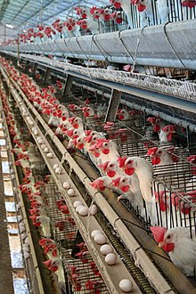
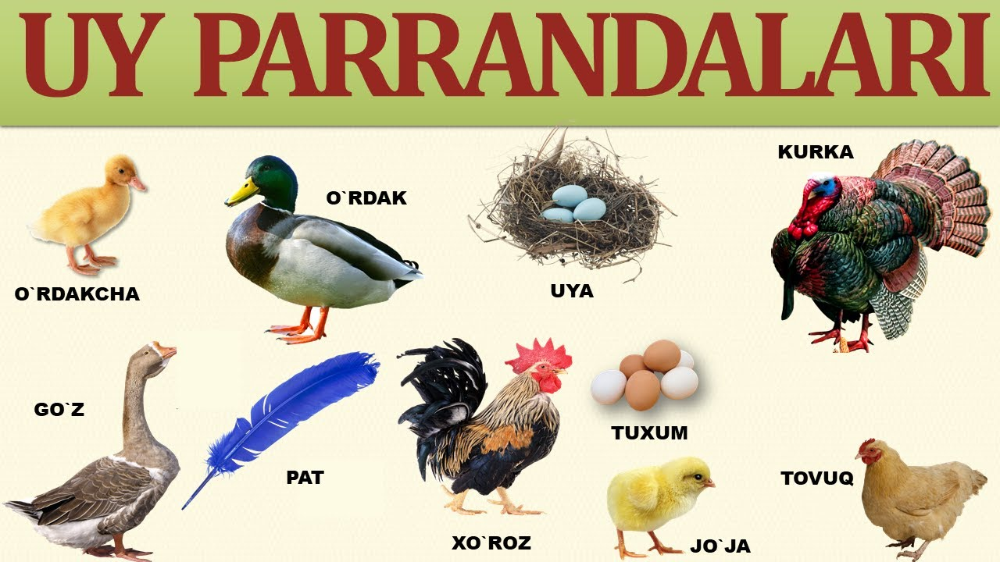
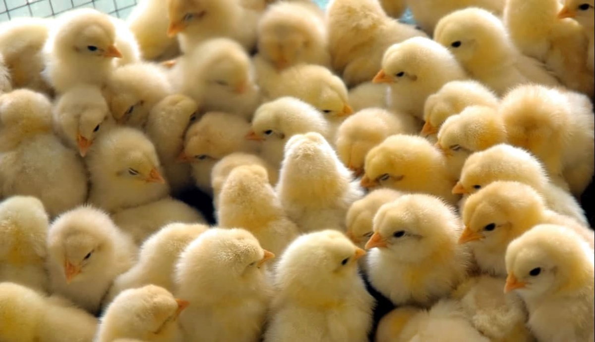

Parrandachilik — uy parrandalarini yetishtirish; chorvachilikning bir tarmogʻi. Parrandachilikning asosiy mahsuloti — oziq-ovqatga ishlatiladigan tuxum va goʻsht; qoʻshimcha mahsuloti — parranda pati va pari. Parrandalarni soʻyish va uni qayta ishlash chiqindilaridan yem uni ishlab chiqariladi. Parranda goʻngi — qimmatli organik oʻgʻiti. Parrandachilikda tuxum, asosan, tuxum yoʻnalishidagi, qisman goʻsht-tuxum va goʻsht yoʻnalishidagi tovuq zotlari va krosslaridan olinadi. Goʻsht yetishtirish uchun goʻsht beradigan tovuq, oʻrdak, kurka, gʻoz, sesarka, goʻsht kaptarlar koʻpaytiriladi. Parranda goʻshti yetishtirishning asosiy manbai — broylerlarni boqishdir. Shuningdek, bedanadyan parhez tuxum va goʻsht olinadi.
  